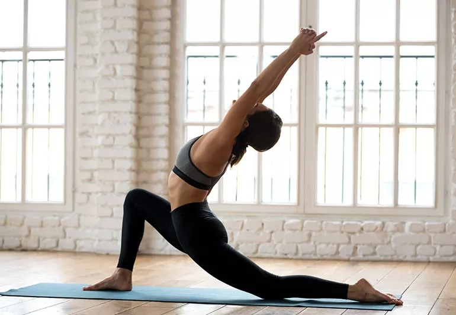

Hot yoga is a style of yoga practiced in a heated room. Many people are drawn to it because it combines physical challenge with mindfulness and stress relief. It can feel intense at first, but for many students, the heat helps them feel more loose, focused, and accomplished after class.
The warm room can help muscles feel more open during movement, which may make stretching feel easier. Over time, this can help improve flexibility and range of motion.
Hot yoga is not only about stretching. Many poses also challenge balance, core control, leg strength, and endurance, making it a full-body workout.

One of the biggest benefits of hot yoga is the mental reset. Focusing on breathing and movement can help reduce stress and create a calmer mindset.
The heated setting can be challenging, so hot yoga teaches patience, consistency, and learning how to stay present even when something feels difficult.

Hydration is important before and after class. Beginners should pace themselves, take breaks when needed, and listen to their body instead of forcing every pose.
“Hot yoga challenges both the body and the mind, which is why many people leave class feeling stronger and more refreshed.”
Yes, as long as beginners take it slow. Bringing water, using a towel, and taking breaks can make the experience feel much more comfortable.